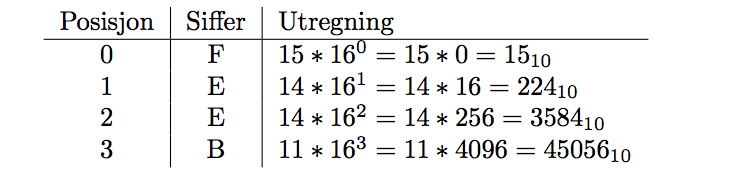

Det som kommer er kanskje banalt og virker dumt, men det er viktig ˚a ha god forst˚aelse av prinsippene bak et tallsystem, for reglene er direkte overførbare mellom systemene. P˚a tvers av tallsystemene er det mulig ˚a anvende de samme teknikkene, og vi har en grunnformel som vi skal forholde oss til: Denne formelen gir oss verdien av et gitt siffer i et gitt tall. Grunntallet i et tallsystem er alltid det samme som antall tilgjengelige siffer i det samme tallsystemet. Posisjon er her sifferets posisjon i tallet, hvor posisjonen lengst til høyre er 0, og øker mot venstre.
Dette er tatt med for ˚a vise hvordan formelen fungerer p˚a tall vi er veldig kjent med fra før. Vi bruker formelen (1) p˚a tallet 36810 og f˚ar følgende utregning av verdier: Summen av alle verdiene er ”selvfølgelig” 368, som var tallet vi startet med. Her har vi regnet fra desimal til desimal!
Det binære tallsystemet har grunntallet 2, og best˚ar kun av sifferene 0 og 1. Vi bruker igjen formelen
(1). For tallet 1010102 f˚ar vi følgende utregning av verdier:
 som vi ser tar binæretall mye større plass enn desimale tall.
som vi ser tar binæretall mye større plass enn desimale tall.
Det heksadesimale tallsystem har grunntallet 16, og har verdiene 0 til og med 9, og a til og med f. N˚a begynner det ˚a se annerledes ut, vi blander bokstaver og tall. Her er en liten oversikt over hvordan vi oversetter bokstavene til tall, store eller sm˚a bokstaver spiller ingen rolle:
Hvis vi bare holder tunga rett i munnen og bruker den samme formelen, ser vi at utregning til desimal ikke er noen sak, la oss prøve tallet BEEF16:  Summen av verdiene er alts˚a Det heksadesimale tallet tar her mindre plass enn det desimale